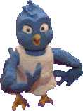

Long-distance Birds

Briefly you can copy a bird to the clipboard (e.g. using control-c) and then paste it (e.g. using control-v) into an email, chat, instant message, web page, or floppy so that it ends up on another computer running ToonTalk. If you give the bird something and the other computer is still running ToonTalk and there is a network (and no fire walls or the like in-between) then it should arrive on the nest on the other computer. If the other computer starts running ToonTalk before you quit your ToonTalk then the message will be delivered soon afterwards.
The nest can be saved (e.g. in a city) on one computer and the bird on another and the connection will be reestablished when both systems are running and the bird and nest are recreated. Currently this will not work if the computer with the nest as a different Internet address (IP) than when it was created. The bird can be recreated on a different computer or even on multiple other computers and all the birds will fly to the same nest.
You can also load the bird and nest into the same ToonTalk on the same computer and the connection will be established and work without using the network.
If you want to copy a bird to the clipboard without making it network capable you'll need to copy the bird's nest at the same time. E.g. put them both in a box before copying to the clipboard.
You can edit your toontalk.ini file to produce a detail log of long-distance bird activities.
Future enhancements will enable nests to be relocated or copied. And messages to be sent even if both computers aren't running at the same time.
Requires Beta 23 or Beta 250400 or later. It also requires DirectX 7 or later or for NT 4 you'll need service pack 6 or higher.
home | search | purchase | manual | news | info | faq | support | downloads | press | contact us